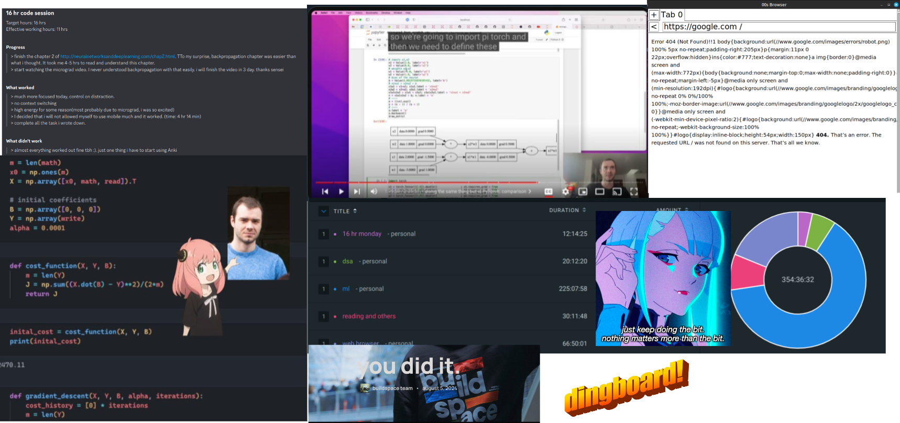

angkul
2024 Summer Archive
This summer was the best summer I ever had. I made lots of friends, met a lot of amazing people, and coded a lot. So at the end of the summer, I want to write a summary of what I did this summer.
My personal(realised few things which changed my life pov for few things :D) and professional growth was expontential. build some good habits
thanks everyone

What I Did This Summer:
- Classic ML from CS229. Only 11 lectures because I realized that it is an outdated course.
- Doing CS231n. I'm going to complete the course. I have completed four lectures. It has the best teacher.
- Built Micrograd.
- Tried competitive programming but I was bored.
- Tried DSA but again dumped it because I was bored.
- Built a basic version of a web browser(not completed) by following this tutorial book
- Wrote ML algorithms from scratch and built some projects.
- Did a lot of 16-hour code sessions. Thanks to dnbt.
- Wow, can't believe it, but I completed 50 days of ML.
- Started posting on Twitter frequently. My first intention was to network and document my journey, but then I enjoyed the interaction there and loved it. Two blogs that were helpful for me and inspired me to post more: Twitter Guide and Posting Guide.
Future Goals
- Posting more tech posts on Twitter and some blogs. In short, becoming more knowledgeable.
- Implementing research papers.
- Doing a lot of 16-hour code sessions.
- Taking books more seriously and relying on them more for learning.
- Building a lot of projects.
- Finishing the "Zero to Hero" at least once.
- Now I guess it's time to learn PyTorch.
- Learn some basic frontend and backend. These are kinda necessary these days.
- DSA. Need to start doing it again.
- my health take a toll. so gonna start workout soon
- Medium Priority: Do some C and build some projects.
- Low Priority: Continue working on the web browser.
Learnings
- Just post and interact with people. Don't worry. We post.
- Message everyone like they are your friend. Be respectful and fun. People are ready to help you, but you have to help yourself first.
- Read, read, read.
- Don't be afraid to accept your mistakes and shortcomings. I accept them frequently in tweets. Chill.
- Don't fall for the shining object phenomenon. Focus on things that are important.
- Just keep doing the bit, anon
. -. -..